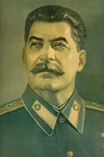

Hi this is my website dedicated to Joseph Stalin
Contact MeJoseph Vissarionovich Stalin (1878–1953) was a Soviet statesman and political leader who ruled the USSR from the late 1920s until his death in 1953. As General Secretary of the Communist Party and leader of the Soviet Union, he implemented policies of rapid industrialization, agricultural collectivization, and the consolidation of a totalitarian regime. Stalin's rule was marked by extensive political purges, mass arrests, and deportations. However, the Soviet Union under his leadership played a pivotal role in the defeat of Nazi Germany during World War II and emerged as a global superpower.
| Day | Activity |
|---|---|
| Monday | Meetings with the Politburo or ministers. |
| Tuesday | Work with military reports, meetings with commanders. |
| Wednesday | Receiving foreign diplomats, reading telegrams. |
| Thursday | Analysis of reports, discussion of current tasks. |
| Friday | Meetings on agricultural issues. |
| Saturday | Meetings with secretaries and preparation of decrees. |
| Sunday | Personal rest or work with documents. |
Email: bayk0nur@icloud.com